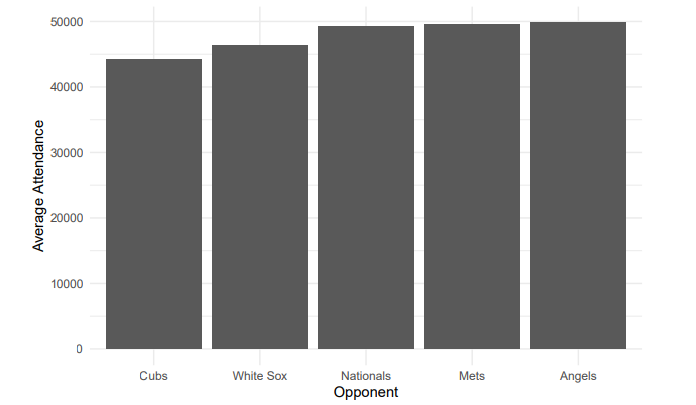
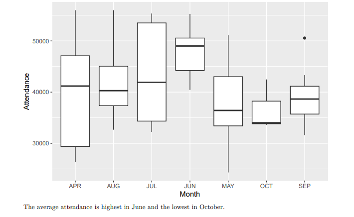
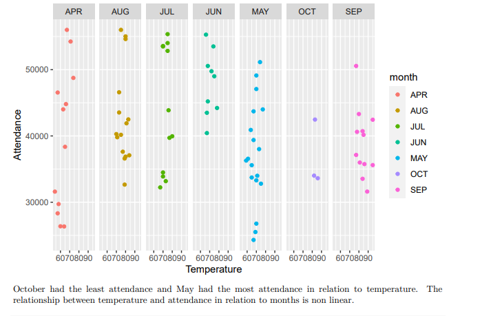

<!DOCTYPE HTML>
<!--
	Strata by HTML5 UP
	html5up.net | @ajlkn
	Free for personal and commercial use under the CCA 3.0 license (html5up.net/license)
-->
<html>

<head>
	<title> Analya Ramirez portfolio website </title>
	<meta charset="utf-8" />
	<meta name="viewport" content="width=device-width, initial-scale=1, user-scalable=no" />
	<link rel="stylesheet" href="assets/css/main.css" />
</head>

<!-- Google tag (gtag.js) -->
<script async src="https://www.googletagmanager.com/gtag/js?id=G-D125QPSGD5"></script>
<script>
	window.dataLayer = window.dataLayer || [];
	function gtag() { dataLayer.push(arguments); }
	gtag('js', new Date());

	gtag('config', 'G-D125QPSGD5');
</script>


<body class="is-preload">

	<!-- Header -->
	<header id="header">
		<div class="inner">
			<a href="images/fulls/profile.jpeg" class="image avatar"></a>
			<h1><strong>Analya Ramirez</strong></h1>
			<P> I am passionate about delivering decision-making support grounded in data, utilizing statistical
				modeling, machine learning, and data mining algorithms to drive informed choices.</P>
			<!-- <h1 style="font-size: 2px;"></h1><a href="https://www.linkedin.com/in/isaac-dada-24ba6ab3/">@IsaacDada</a> -->
		</div>
	</header>

	<!-- Main -->
	<div id="main">

		<!-- One -->
		<section id="one">
			<header class="major">
				<h1 style="font-size: 24px;">Using Data to Improve MLB Attendance</h1>
			</header>
			<article class="col-6 col-12-xsmall work-item">
				<h2><strong>Step 1: Load the dataset</strong></h2>
<pre>
<code style="background-color: black;">
	library(tidyverse)
## -- Attaching packages --------------------------------------- tidyverse 1.3.2 --
## v ggplot2 3.4.2 v purrr 1.0.1
## v tibble 3.2.1 v dplyr 1.1.2
## v tidyr 1.3.0 v stringr 1.5.0
## v readr 2.1.4 v forcats 1.0.0
## -- Conflicts ------------------------------------------ tidyverse_conflicts() --
## x dplyr::filter() masks stats::filter()
## x dplyr::lag() masks stats::lag()
dodgers<- read.csv("dodgers-2022.csv")
</code>
</pre>
				<br>
				<h2><strong>Step 2: Data exploration</strong></h2>
<pre>
<code style="background-color: black;">
str(dodgers)
## ’data.frame’: 81 obs. of 12 variables:
## $ month : chr "APR" "APR" "APR" "APR" ...
## $ day : int 10 11 12 13 14 15 23 24 25 27 ...
## $ attend : int 56000 29729 28328 31601 46549 38359 26376 44014 26345 44807 ...
## $ day_of_week: chr "Tuesday" "Wednesday" "Thursday" "Friday" ...
## $ opponent : chr "Pirates" "Pirates" "Pirates" "Padres" ...
## $ temp : int 67 58 57 54 57 65 60 63 64 66 ...
## $ skies : chr "Clear " "Cloudy" "Cloudy" "Cloudy" ...
## $ day_night : chr "Day" "Night" "Night" "Night" ...
## $ cap : chr "NO" "NO" "NO" "NO" ...
## $ shirt : chr "NO" "NO" "NO" "NO" ...
## $ fireworks : chr "NO" "NO" "NO" "YES" ...
## $ bobblehead : chr "NO" "NO" "NO" "NO" ...
						
</code>
</pre>
				<br>
				<h2><strong>Step 3: Check for missing values</strong></h2>
<pre>
<code style="background-color: black;">
## month day attend day_of_week opponent temp
## 0      0   0       0           0        0
## skies  day_night cap   shirt fireworks bobblehead
## 0        0       0      0     0           0			
					</code>
					</pre>
				<h4>There are no missing values in the dataset.</h4>
				<h2><strong>Step 4: Exploratory Data Analysis (EDA)
					</strong></h2>
<pre>
<code style="background-color: black;">
	# Attendance by day of the week
dodgers %>%
group_by(day_of_week) %>%
summarise(average_attendance = mean(attend)) %>%
ggplot(aes(x = day_of_week, y = average_attendance)) +
geom_col() +
labs(title = "Average Attendance by Day of the Week",
x = "Day of the Week",
y = "Average Attendance") +
theme_minimal()
</code>
</pre>
				<br>

				<h2><strong>Average Attendance by Day of the Week</strong></h2>
			
				<br>
				<h4>The average attendance was the highest for Tuesdays with an approximate average of 45,000 and the lowest
					average attendance was on Mondays.
					</h4>
				<br>
<pre>
<code style="background-color: black;">
	# Attendance by opponent
	dodgers %>%
	group_by(opponent) %>%
	summarise(avg_attend = mean(attend)) %>%
	arrange(desc(avg_attend)) %>%
	top_n(5) %>%
	ggplot(aes(x = reorder(opponent, avg_attend), y = avg_attend)) +
	geom_col() +
	labs(title = "Top 5 Opponents by Average Attendance",
	x = "Opponent",
	y = "Average Attendance") +
	theme_minimal()
	## Selecting by avg_attend
</code>
</pre>
				<br>
				<h2><strong> Top 5 Opponents by Average Attendance</strong></h2>
				
				<br>

				<h4> The top 5 opponents by average attendance are Angels, Mets, Nationals, White Sox and Cubs. Angels had
					the highest average attendance while the Cubs had the least. </h4>
				<br>
<pre>
<code style="background-color: black;">
	# Attendance variation across different months
	ggplot(dodgers, aes(x = month, y = attend)) +
	geom_boxplot() +
	labs(x = "Month", y = "Attendance", title = "Attendance Variation by Month")
</code>
</pre>
				<br>

				<h2><strong> Attendance Variation by Month</strong></h2>
				
				<br>
<pre>
<code style="background-color: black;">
# Attendance variation across different months
ggplot(dodgers, aes(x = month, y = attend)) +
geom_boxplot() +
labs(x = "Month", y = "Attendance", title = "Attendance Variation by Month")
</code>
</pre>
<h2><strong>Attendance in Relation to Temperature and Month</strong></h2>

<pre>
<code style="background-color: black;">
	## Attendance in relation to temperature and day_night
	dodgers$day_night<-as.factor(dodgers$day_night)
	ggplot(dodgers, aes(x=temp, y=attend, color=day_night)) + geom_point() + facet_grid(~day_night)+
	labs(x = "Temperature", y = "Attendance", title = "Attendance in Relation to Temperature and Day/Nigh
</code>
</pre>


<h2><strong> Top 5 Opponents by Average Attendance</strong></h2>

<br>

<h4> The relationship between temperature and attendance in relation to day and night is linear.
	Theres a negative linear relationship between temperature and attendance during the day, meaning increase
	in temperature causes decrease in attendance.
	Theres a positive linear relationship between temperature and attendance during the night, meaning increase
	in temperature causes increase in attendance. </h4>
<pre>
<code style="background-color: black;">
	# Correlation Analysis
	# Calculate correlations
	corr1 <- cor(dodgers[, c("attend", "temp")])
	corr1
	## attend temp
	## attend 1.00000000 0.09895073
	## temp 0.09895073 1.00000000
</code>
</pre>
<h4> There is a high positive correlation (0.098) between temperature and attendance, meaning increase in temperature causes a increase in attendance.
	 </h4>
<pre>
<code style="background-color: black;">
	# Calculate correlations
	corr2 <- cor(dodgers[, c("attend", "day")])
	corr2
	## attend day
	## attend 1.00000000 0.02709298
	## day 0.02709298 1.00000000
</code>
</pre>
<h4> There is a low positive correlation (0.027) between attendance and day, meaning increase in day causes a
	slight increase in attendance.
</h4>

<h2><strong> Step 7: Reccomendations</strong></h2>
<h4> Recommendation 1: Opponent Selection
	<br>
	Schedule more games against popular opponents that is Angels, Mets, Nationals, White Sox and Cubs, as
	they tend to attract higher attendance.
	<br>
	Recommendation 2: Game Scheduling
	<br>
	Schedule games on Tuesdays and the month of June since historically they have higher attendance.
	Recommendation 3: Game scheduling in relation to temperature
	<br>
	Schedule games in May since increase in temperature means increase in attendance for the month of May.
	Recommendation 4: Game schedule in relation to day_night and temperature
	Schedule games at night since increase temperature at night causes increase in attendance compared to
	during the day.
	<br>
	Recommendation 5: Enhancing Fan Experience
	<br>
	Improve the overall fan experience by investing in stadium facilities, providing engaging entertainment during
	games, and creating a welcoming and inclusive atmosphere for all fans.
</h4>
				<br>
				<ul class="actions">
					<li><a href="../requirements/Using Data to Improve MLB Attendance.pdf"  download="bottle.json"  class="button">Learn
							More</a>
					</li>

				
					<li><a href="https://github.com/aramirez209/" class="button">See Github Repository</a></li>
				</ul>

		</section>
<hr>

		<!-- Footer -->
		<footer id="footer">
			<div class="inner">
				<ul class="icons">
					<li><a href="https://www.linkedin.com/in/analya-ramirez-004035163/"
							class="icon brands fa-linkedin"><span class="label">Linkedin</span></a></li>
					<li><a href="https://github.com/aramirez209" class="icon brands fa-github"><span
								class="label">Github</span></a></li>
					<li><a href="mailto:Analya_ramirez209@yahoo.com" class="icon solid fa-envelope"><span
								class="label">Email</span></a></li>
				</ul>
			</div>
		</footer>

		<!-- Scripts -->
		<script src="assets/js/jquery.min.js"></script>
		<script src="assets/js/jquery.poptrox.min.js"></script>
		<script src="assets/js/browser.min.js"></script>
		<script src="assets/js/breakpoints.min.js"></script>
		<script src="assets/js/util.js"></script>
		<script src="assets/js/main.js"></script>

</body>

</html>